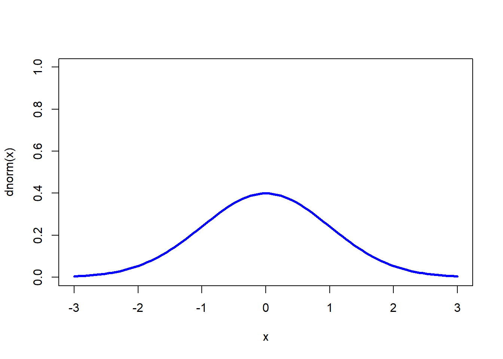

在初中阶段的基础统计分析章节中，我们学习了一些描述数据集中趋势和波动情况（离散趋势）的统计指标，如平均数、中位数、方差和标准差等等。教材中给出了这样一些计算公式： \[\bar{X} = \frac{\left(x_1+ x_2 + \cdots + x_n\right)}{n}\] \[s^2 = \frac{[(x_1-\bar{x})^2+(x_2-\bar{x})^2+\cdots+(x_n-\bar{x})^2]}{n}\] \[s = \sqrt{\frac{1}{n}[(x_1-\bar{x})^2 + (x_2-\bar{x})^2 + \cdots + (x_n-\bar{x})^2]}\]
若一组数据服从正态分布，上述公式则正好为正态分布参数的极大似然估计。这些公式看起来是理所当然的，实际上我们可以通过数学方法来证明它。
极大似然估计是在给定数据的情况下，推断最有可能的参数分布。也就是说，极大似然估计的工作就是找到一个概率分布（包括概率分布形式、分布参数），使其能够最好地描述所获得的数据。以正态分布为例，正态分布的概率密度函数为： \[f(x)=\frac{1}{\sqrt{2\pi}\sigma}\exp(-\frac{(x-\mu)^2}{2\sigma^2})\]
标准正态分布概率密度函数图

如果我们获得了一份包含n个值的样本，数据服从均值为μ，方差为\(σ^2\)的正态分布： \[x_1, x_2, x_3, \cdots, x_n\]
根据正态概率密度函数可以写出其似然函数为： \[L(\mu,\sigma \mid x)=\frac{1}{\sqrt{2\pi}\sigma}\exp(-\frac{(x-\mu)^2}{2\sigma^2})\] 接下来就是求出使得\(L(\mu,\sigma \mid X)\)取最大值的\(\mu\)和\(\sigma\)。可通过求二阶偏导数求得该二元函数的最值。 在求导之前先两边同时取对数，以利于求导计算。即： \[ \begin{align} \ln L(\mu,\sigma \mid x)&=\ln (\frac{1}{\sqrt{2\pi}\sigma}\exp(-\frac{(x-\mu)^2}{2\sigma^2})) \\ &= \ln(\frac{1}{\sqrt{2\pi}\sigma}) -\frac{(x-\mu)^2}{2\sigma^2} \\ &= 0-\ln (\sqrt{2\pi}\sigma)-\frac{(x-\mu)^2}{2\sigma^2}\\ &= -\ln(\sqrt{2\pi}) - \ln (\sigma) - \frac{(x-\mu)^2}{2\sigma^2} \\ \end{align} \] 此时，可求\(\mu\)的偏导数： \[ \begin{align} \frac{\partial{\ln L(\mu,\sigma \mid x)}}{\partial{\mu}} &= -0-0-\frac{2(x-\mu)}{2\sigma^2}(-1)\\ &= \frac{x-\mu}{\sigma^2} \end{align} \] 同样，可求得关于\(\sigma\)的偏导数： \[ \begin{align} \frac{\partial{\ln L(\sigma,\mu \mid x)}}{\partial{\sigma}} &= -0-\frac{1}{\sigma}-(-2)\frac{(x-\mu)^2}{2}\sigma^{-3} \\ &= -\frac{1}{\sigma}+\frac{(x-\mu)^2}{\sigma^3} \\ \end{align} \]
根据： \[L(\mu,\sigma \mid X)=L(\mu,\sigma \mid x_1)L(\mu,\sigma \mid x_2)L(\mu,\sigma \mid x_3) \cdots L(\mu,\sigma \mid x_n)\] 可得： \[ \begin{align} \ln L(\mu,\sigma \mid X)&=\ln L(\mu,\sigma \mid x_1)+\ln L(\mu,\sigma \mid x_2)+\ln L(\mu,\sigma \mid x_3)+\cdots+\ln L(\mu,\sigma \mid x_n) \\ \end{align} \] 所以： \[ \begin{align} \frac{\partial{\ln L(\mu,\sigma \mid X)}}{\partial{\mu}} &= \frac{x_1-\mu}{\sigma^2} + \frac{x_2-\mu}{\sigma^2} + \frac{x_3-\mu}{\sigma^2} + \cdots + \frac{x_n-\mu}{\sigma^2} \\ &= \frac{(x_1-\mu) + (x_2-\mu) + (x_3-\mu) + \cdots + (x_n-\mu)}{\sigma^2} \\ &= \frac{(x_1+ x_2 + \cdots + x_n) - n\mu}{\sigma^2} \end{align} \] 令\(\frac{\partial{\ln L(\mu,\sigma \mid X)}}{\partial{\mu}}\) = 0，得： \[ \begin{align} \frac{(x_1+ x_2 + \cdots + x_n) - n\mu}{\sigma^2} = 0 \\ (x_1+ x_2 + \cdots + x_n) = n\mu \\ \mu = \frac{(x_1+ x_2 + \cdots + x_n)}{n} \end{align} \]
\(\mu\)的极大似然估计值即为所有观察值的均数
同理：
\[ \begin{align} \frac{\partial{\ln L(\mu,\sigma \mid x)}}{\partial{\sigma^2}} &= -\frac{1}{\sigma}+\frac{(x_1-\mu)^2}{\sigma^3} -\frac{1}{\sigma}+\frac{(x_2-\mu)^2}{\sigma^3} -\frac{1}{\sigma}+\frac{(x_3-\mu)^2}{\sigma^3} - \cdots -\frac{1}{\sigma}+\frac{(x_n-\mu)^2}{\sigma^3} \\ &= -\frac{n}{\sigma} + \frac{(x_1-\mu)^2+(x_2-\mu)^2+(x_3-\mu)^2+\cdots+(x_n-\mu)^2}{\sigma^3}\\ \end{align} \] 令\(\frac{\partial{\ln L(\mu,\sigma \mid x)}}{\partial{\sigma}}\) = 0，即得： \[ -\frac{n}{\sigma} + \frac{(x_1-\mu)^2+(x_2-\mu)^2+(x_3-\mu)^2+\cdots+(x_n-\mu)^2}{\sigma^3} = 0 \\ \frac{(x_1-\mu)^2+(x_2-\mu)^2+(x_3-\mu)^2+\cdots+(x_n-\mu)^2}{\sigma^2} = n \\ \sigma^2 = \frac{(x_1-\mu)^2+(x_2-\mu)^2+(x_3-\mu)^2+\cdots+(x_n-\mu)^2}{n} \]
显然，上述数据也可能不服从正态分布，那么同样的思路可以用于求解其它概率分布参数的极大似然估计值：写出似然函数、求导（先取对数）、令导数值为0求解。
如果数据服从指数分布\(f(x)=\lambda e^{(-\lambda x)}\)，利用上述方法可求得参数\(\lambda\)的极大似然估计值为： \[\lambda=\frac{x}{x_1+x_2+\cdots+x_n}\] 又如，当数据服从二项分布\(f(x)=\binom{x}{n}p^k(1-p)^{n-x}\)时，其参数\(p\)的极大似然估计为： \[p=\frac{x}{n}\]
本文是对StatQuest中有关内容的整理和复现